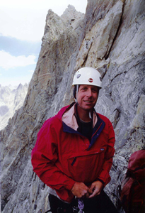

A
Tribute to Robert H. Moore (1968 - 2004)
Robert
"Rock" Moore - One of Utah's Climbing Elite
|
|
|
 |

(Story from the SLTribune, Tuesday, March 2, 2004)
Robert
Moore had hiked world class terrain for more than 10 years from
the mountains of Alaska and Canada to the Rocky Mountain's Wind
River range. His friends and climbing partners call him an elite
alpinist who spent up to 80 days a year traversing rock and ice
walls.
So his day trip Sunday to Maple Canyon in Sanpete
County seemed routine -- especially considering he'd done it before.
But just 20 feet from the top, Moore, 35, noticed a horizontal crack
in the ice. Thinking it would hold, he placed another two screws
into the frozen wall as he advanced up the rope. "He was just about
to the top when the whole thing collapsed," said Mike Morris, one
of three climbing partners and friends, who choked back tears while
talking to reporters Monday.
Moore died after plunging 100 feet, despite his
climbing partner's frantic attempts at resuscitation. The Sandy
man leaves behind a wife, two boys ages 5 and 3 and a 3-week-old
daughter.
Friends say Moore, who was born and raised in
Sandy, was a dedicated family man, who loved outdoor adventure,
golf and worked in real estate. "He was funny and loud
but gentle as a deer," Morris said.
Around
2:30 p.m., Moore and partner Marcus Porter were climbing the day's
second route -- what hikers call Frankenchrist -- when the thick
wall of ice broke free. Porter trekked out through thigh-deep snow
and found hikers with a cell phone who called search and rescue.
But due to massive trauma, immediate care could not have saved his
life, friends say.
Mike Morris, Moore's friend, who guides for climbers
around the world, said the duo had "favorable" conditions Sunday
even though the window for ice climbing in Maple Canyon can be as
short as two months.
"It's pretty safe if you're well-educated like
Robert and Marcus were," he said. "If Robert would have sensed [trouble]
he probably would have come back down."
Moore placed six ice screws for protection in
the wall as he climbed, but when the ice collapsed, it took with
it the top two screws, and a third screw failed. The combined weight
of the climber and the slab of ice stressed the rope, causing Moore
to hit the ground. "A lot of it was rope stretch," said Nole Walkingshaw,
a climbing companion.
His love of mountaineering notwithstanding, friends
say Moore was most devoted to his children and thrilled about the
recent birth of his daughter. Friends of the Moore family hope to
pass Moore's passion for outdoor recreation on to his children as
they get older, said Walkingshaw.
A trust fund for The Children of Robert Moore
has been created at Zions Bank.
Morris, said those close to Moore feel "shattered"
by the loss. And losing an experienced member of Utah's climbing
community, he says, changes the sport. "This will always be in the
back of my mind for the rest of my life as I go into the mountains."
(Story from the SLTribune)
Contact
Info:
Please
send website corrections or input to
to Randy Hancock at
|
|
{kind=link}